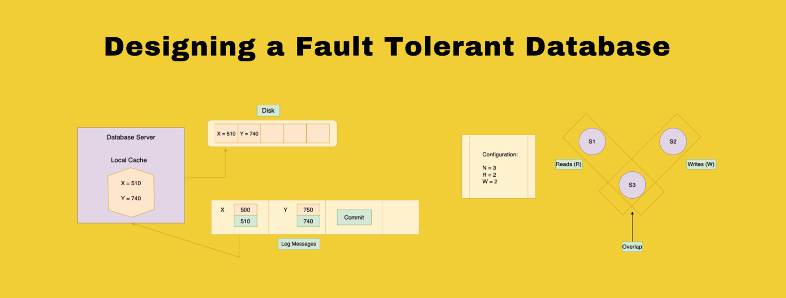

Designing a Fault Tolerant Database for Scalable Distributed Systems
7 min read
When we are building Databases for a highly scalable service or a system
involving a lot of machines working in parallel to handle the client’s
incoming request, there are multiple things which we need to take care of.
We will look in detail on how we can come up with a Fault Tolerant Database
architecture in a Distributed System.